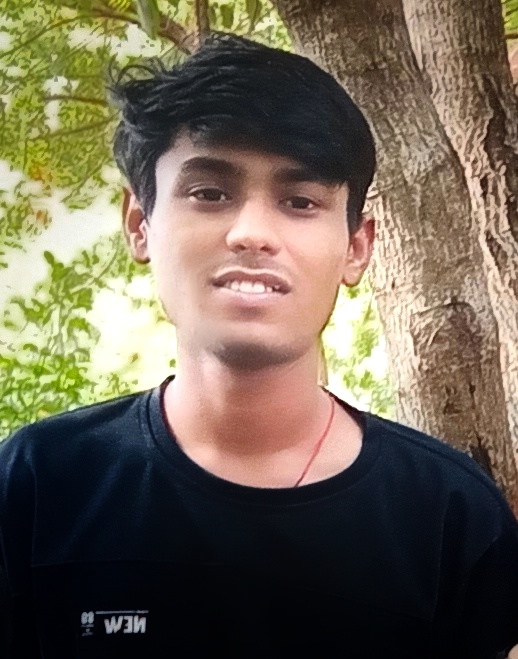

Contact:keshavchoudhary550@gamil.com
Linkdinlinkdin.com
Githubgithub.com
|  | “Hello, my name is keshav choudhary, and I’m a computer science major. I have experience with several programming languages, including Java, Python, and SQL. I’m particularly interested in artificial intelligence and machine learning, and I’m currently working on a project that involves developing an AI-powered chatbot. Last semester, I worked on a team project that involved developing a mobile app for tracking fitness goals. I learned a lot about software development processes and project management during that experience. After graduation, I hope to work as a software engineer at a tech company, where I can continue to develop my skills and contribute to innovative projects. In my free time, I enjoy attending hackathons and learning about new technologies in the field. For more such latest blogs on interview preparation, careers and more, stay tuned with us. And don’t forget to follow us on Instagram, Facebook, Twitter, and Linkedin. |
21-oct-20223
©keshav choudhray ,all rights reserved